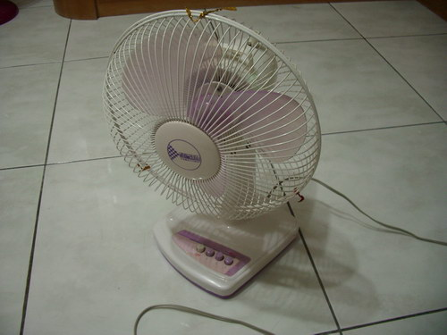
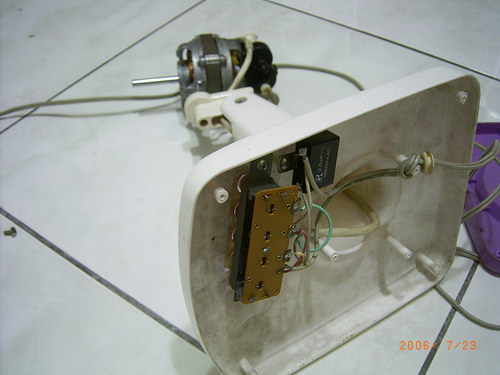
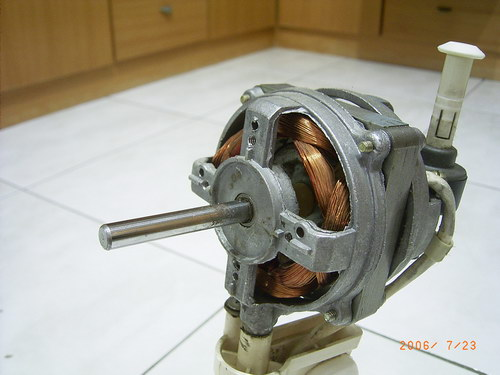
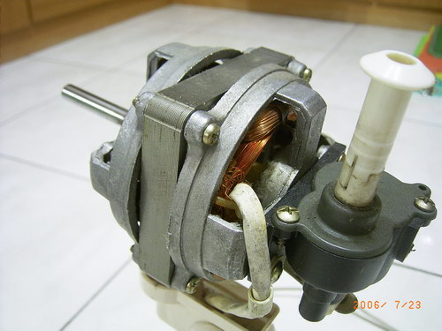
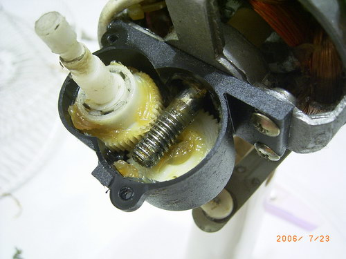
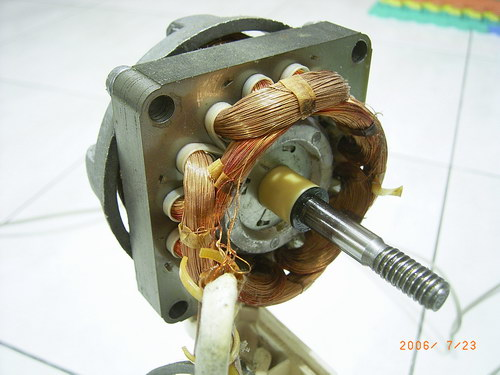
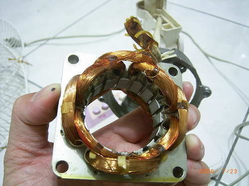
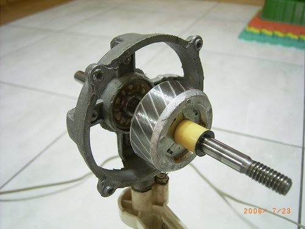
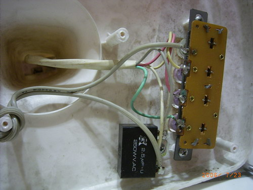

↑原本是一個好好的電扇。

↑就這麼把他拆了。

↑電扇馬達的前面，看到一堆線圈。

↑電扇馬達的後面，也看到線圈，還有控制用的電線。

↑就是這些齒輪在電扇後面，配合馬達軸心的旋轉，電扇才能做出〝搖頭〞的動作。

↑拆掉馬達的外殼，看到線圈、鐵心以及具有磁性的轉軸。

↑把線圈及鐵心拿下來觀察，線圈共有八個，兩兩相對，鐵心是一層層的，不是一整塊的。

↑這是馬達裡頭的磁性轉軸，奇怪，為何表面有斜斜的紋路呢？

↑電扇底座下方的電路，案不同按鈕就選擇不同顏色的電線導通，
旁邊那個黑黑的長方體是一個電容，奇怪，這裡放電容要幹麻呢？